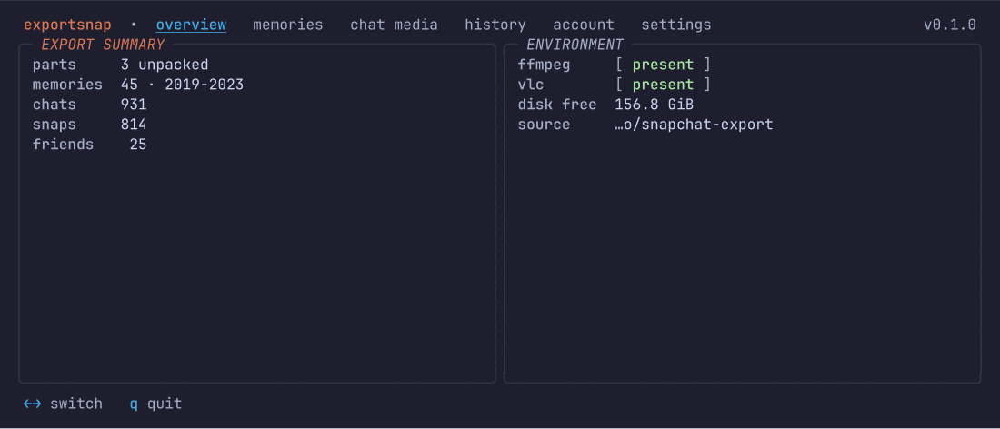
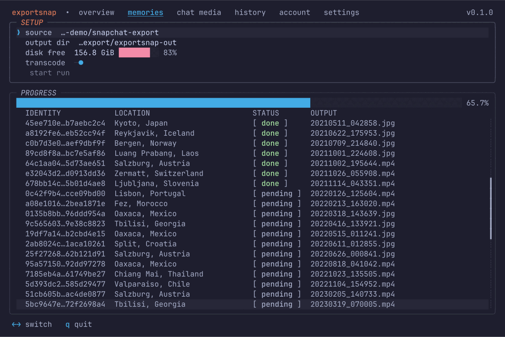
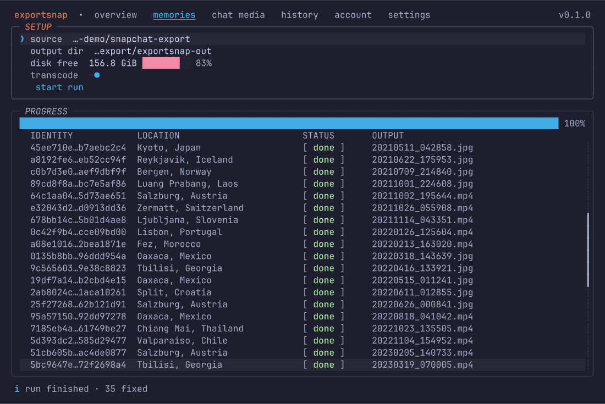
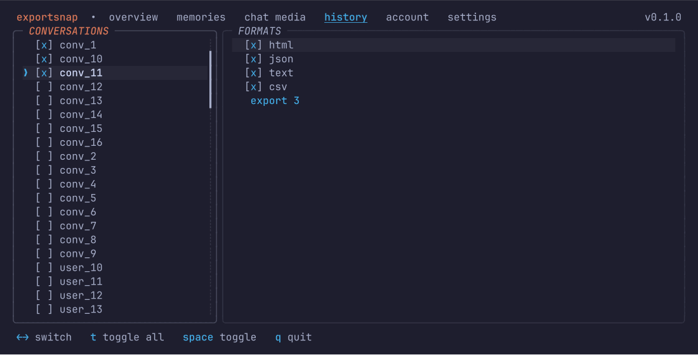
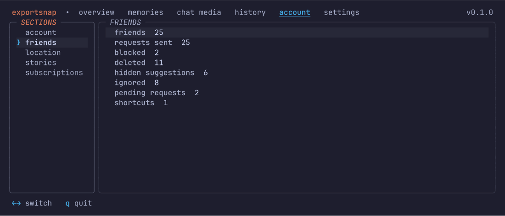
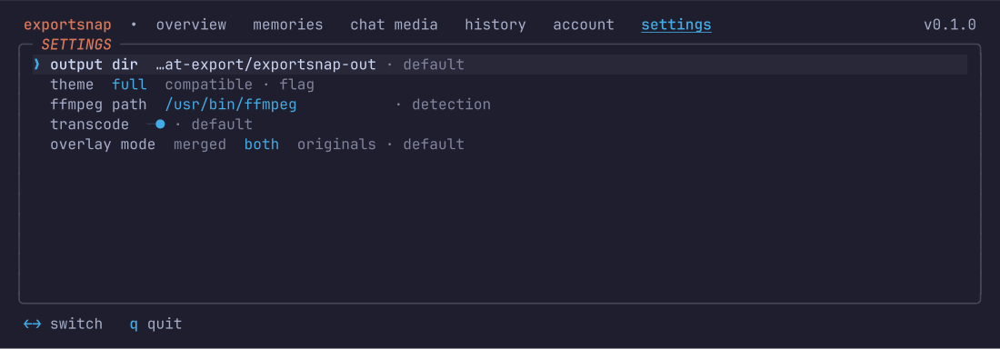

your export, with its metadata put back.
snapchat hands you five zips of files stripped of their dates, their captions and any trace of where they belong.
cloud upload is a planned opt-in feature and is not in this release. nothing leaves your machine until you turn it on and authorize a provider.
what the export gets wrong
every row below is something snapchat's own delivery leaves broken.
| what you get | what exportsnap writes |
|---|---|
| every file stamped with the day you downloaded it | the day you took it, in exif and in the file's own timestamp |
| captions and stickers as separate transparent pngs | burned into the photo or video underneath |
| memories named by uuid in one flat folder | 2021/03/20210304_143005.jpg |
| chat media with no sender, no conversation, no date | filed per conversation, dated from the message |
| chat and snap history sitting in two json files | one transcript per conversation, in four formats |
| media spread over five zip parts | reconciled against the manifest, with the gaps counted |
overlay merge
captions and stickers composite back onto the photo or video, scaled to fit where the pair disagrees on size.
real capture dates
exif for photos, container times for video, plus the file's modification time. the manifest first, the file's own embedded stamp next, the filename day last.
gps, where it exists
the manifest's location field is a place name in every export seen so far. exportsnap shows it as text and refuses to invent a coordinate from it. real coordinates get written, with the timezone offset.
chat media fixer
joins the loose chat_media files to the messages that named them, then files each one under its conversation with the sender in its metadata.
history export
chat and snaps merge into one timeline per conversation, written as html, json, text and csv. the html links each media file only where a run wrote it.
multi-part zips
five parts with the manifest in one and the media in three others is the normal shape. reconciling them is the point. entries with no media anywhere are counted rather than hidden.
how it works
-
1
request your data
accounts.snapchat.com, my data, tick memories and chat history. the email link is short-lived, so download the zips as soon as it lands.
-
2
unzip the parts
each part goes into a folder named after it. one loop does the whole set.
for z in mydata~*.zip; do unzip -q "$z" -d "${z%.zip}"; done -
3
point exportsnap at the folder
exportsnap --source=~/Downloads/snapchatthe overview screen reports what it found. move to the memories tab and press enter.
-
4
done, resumable at any point
every item's status lands in a sqlite manifest as the run goes. quit halfway and the next run re-verifies what landed, then picks up the rest.
six screens, keyboard only
real captures from a real run, not renders.






compared to the other two
every claim below was read off the tool's own site or readme in august 2026. where a tool does something exportsnap does not, the row says so.
| exportsnap | exportsnaps.com | aio downloader | |
|---|---|---|---|
| price | free | free to 200 files, $14.99 one-time beyond | free |
| license | mit or apache-2.0 | closed | "as-is for personal use" |
| runs as | one native binary, all three platforms | desktop app | desktop app; macos and linux builds are labelled alpha |
| overlay merge | yes | yes | yes |
| exif dates | yes | yes | yes |
| gps | where the export carries coordinates | yes | yes |
| chat media | yes, filed per conversation | memories only | yes |
| chat + snap history export | html, json, text, csv | no | no |
| hevc to h.264 | yes, with ffmpeg | not documented | yes, with vlc |
| multi-part zips | yes, unzip them yourself first | not documented | yes, unzips them for you |
| resume after a crash | per-item sqlite manifest | yes | yes |
| upload to your cloud | planned, opt-in | paid add-on | no |
the aio downloader unzips the parts for you, which exportsnap does not. exportsnaps.com sells a cloud add-on that streams output to your own drive or dropbox. both are worth knowing before you pick.
install
cargo install exportsnapcurl -fsSL https://raw.githubusercontent.com/uwuclxdy/exportsnap/mommy/install.sh | bash -s -- --nocargograb the asset for your platform from the latest release and check it against the release's sha256sums.txt.
faq
does the snapchat data export link expire?
yes. the link snapchat emails you is signed and short-lived, so download the zips promptly. after that the export is files on your disk and exportsnap works on them indefinitely.
can exportsnap download my memories from snapchat's servers?
no. it does not need to: the per-media download links inside memories_history.json are empty strings in every export we have looked at. the media ships inside the zips instead.
does exportsnap upload my data anywhere?
this release makes no network requests at all. cloud upload is planned as an opt-in feature: when it lands it stays off until you turn it on and authorize a provider.
what data does it touch?
the folder you point it at, the output folder, and a small state database in your per-user data directory at mode 0600. screens show counts, statuses and date ranges. the one screen that shows a conversation's name is the history picker, because picking a thread you cannot tell apart is not possible.
do i need ffmpeg?
only for video. photos are fully repaired without it. transcoding hevc to h.264 and burning a caption into a video are the two legs that need it.
why are some memories missing from the output?
because the export is missing them. the manifest lists entries whose media is in no part of the delivery. exportsnap counts those as source_missing rather than reporting a success it did not earn.
how do i export my snapchat chat history to a readable file?
the history tab lists your conversations. tick the ones you want, tick the formats, and export. each conversation gets history.html, history.json, history.txt and history.csv in its own folder.
does it work on windows and macos?
yes. all three platforms build and test on every commit. each release ships a linux x86_64, a macos aarch64 and a windows x86_64 binary.